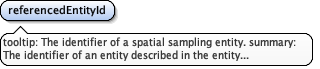

'$RCSfile: eml-methods.xsd,v $' Copyright: 1997-2002 Regents of the University of California, University of New Mexico, and Arizona State University Sponsors: National Center for Ecological Analysis and Synthesis and Partnership for Interdisciplinary Studies of Coastal Oceans, University of California Santa Barbara Long-Term Ecological Research Network Office, University of New Mexico Center for Environmental Studies, Arizona State University Other funding: National Science Foundation (see README for details) The David and Lucile Packard Foundation For Details: http://knb.ecoinformatics.org/ '$Author: obrien $' '$Date: 2009-02-25 23:51:54 $' '$Revision: 1.29 $' This program is free software; you can redistribute it and/or modify it under the terms of the GNU General Public License as published by the Free Software Foundation; either version 2 of the License, or (at your option) any later version. This program is distributed in the hope that it will be useful, but WITHOUT ANY WARRANTY; without even the implied warranty of MERCHANTABILITY or FITNESS FOR A PARTICULAR PURPOSE. See the GNU General Public License for more details. You should have received a copy of the GNU General Public License along with this program; if not, write to the Free Software Foundation, Inc., 59 Temple Place, Suite 330, Boston, MA 02111-1307 USA
moduleName: eml-methodsmoduleDescription: The eml-methods module - Methodological information for resourcesrecommendedUsage: All datasetsstandAlone: no
tooltip: method informationsummary: Information about the methods employed in collecting or generating a data set or other resource.description: The methodStep field allows for repeated sets of elements that document a series of procedures followed to produce a data object. These include text descriptions of the procedures, relevant literature, software, instrumentation, source data and any quality control measures taken.example: Please see the examples for the sub-fields.
<xs:element name="methodStep" maxOccurs="unbounded"><xs:annotation><xs:documentation>tooltip: method information summary: Information about the methods employed in collecting or generating a data set or other resource. description: The methodStep field allows for repeated sets of elements that document a series of procedures followed to produce a data object. These include text descriptions of the procedures, relevant literature, software, instrumentation, source data and any quality control measures taken. example: Please see the examples for the sub-fields.</xs:documentation></xs:annotation><xs:complexType><xs:complexContent><xs:extension base="ProcedureStepType"><xs:sequence><xs:element name="dataSource" type="ds:DatasetType" minOccurs="0" maxOccurs="unbounded"><xs:annotation><xs:documentation>tooltip: data source summary: A source of data used by this methodStep. description: A source of data used by this methodStep.</xs:documentation></xs:annotation></xs:element></xs:sequence></xs:extension></xs:complexContent></xs:complexType></xs:element>
tooltip: Methods descriptionsummary: Description of the methods employed in collecting or generating a data set or other resource or in quality control and assurance.description: The description field allows for repeated text that describes the methodology for a project, experiment, or particular data table or to describe the steps taken to control or assure the quality of the data. Likewise, a literature citation may be provided that describes the methodology that was employed. Or the information my be provided by either referencing a protocol resource or entering the structured protocol informationexample: 1.Collect tissues from algae of interest. a. We are currently collecting Egregia menziezii, Mazzaella splendens, M. flaccida, Hedophyllum sessile, Postelsia palmaeformis and Fucus gardneri.We stopped collecting Neorhodomela larix and Odonthalia floccosa because they can be heavily fouled and we feared that would skew the results. b. We collect a 7-10 cm blade or branch from each plant. For Egregia, try to sample small, young plants or take the base of the blade. For Postelsia, take a few of the blades. The other plants are small enough so a whole blade can be taken.
<xs:element name="description" type="txt:TextType"><xs:annotation><xs:documentation>tooltip: Methods description summary: Description of the methods employed in collecting or generating a data set or other resource or in quality control and assurance. description: The description field allows for repeated text that describes the methodology for a project, experiment, or particular data table or to describe the steps taken to control or assure the quality of the data. Likewise, a literature citation may be provided that describes the methodology that was employed. Or the information my be provided by either referencing a protocol resource or entering the structured protocol information example: 1.Collect tissues from algae of interest. a. We are currently collecting Egregia menziezii, Mazzaella splendens, M. flaccida, Hedophyllum sessile, Postelsia palmaeformis and Fucus gardneri.We stopped collecting Neorhodomela larix and Odonthalia floccosa because they can be heavily fouled and we feared that would skew the results. b. We collect a 7-10 cm blade or branch from each plant. For Egregia, try to sample small, young plants or take the base of the blade. For Postelsia, take a few of the blades. The other plants are small enough so a whole blade can be taken.</xs:documentation></xs:annotation></xs:element>
tooltip: citationsummary: Literature citation relating to the methods used.description: The citation field allows to either reference a literature resource or enter structured literature information
<xs:element name="citation" type="cit:CitationType"><xs:annotation><xs:documentation>tooltip: citation summary: Literature citation relating to the methods used. description: The citation field allows to either reference a literature resource or enter structured literature information</xs:documentation></xs:annotation></xs:element>
tooltip: Protocolsummary: Protocol description relating to the methods used.description: The protocol field is used to either reference a protocol resource or describe methods and identify the processes that have been used to define / improve the quality of a data file, also used to identify potential problems with the data file.
<xs:element name="protocol" type="pro:ProtocolType"><xs:annotation><xs:documentation>tooltip: Protocol summary: Protocol description relating to the methods used. description: The protocol field is used to either reference a protocol resource or describe methods and identify the processes that have been used to define / improve the quality of a data file, also used to identify potential problems with the data file.</xs:documentation></xs:annotation></xs:element>
tooltip: Instrumentationsummary: Instruments used for measurement and recording data.description: The Instrumentation field allows the description of any instruments used in the data collection or quality control and quality assurance. The description should include vendor, model number, optional equipment, etc.example: LACHAT analyzer, model XYX.
<xs:element name="instrumentation" type="res:NonEmptyStringType" minOccurs="0" maxOccurs="unbounded"><xs:annotation><xs:documentation>tooltip: Instrumentation summary: Instruments used for measurement and recording data. description: The Instrumentation field allows the description of any instruments used in the data collection or quality control and quality assurance. The description should include vendor, model number, optional equipment, etc. example: LACHAT analyzer, model XYX.</xs:documentation></xs:annotation></xs:element>
tooltip: Softwaresummary: Software used in the processing of data.description: The software element allows reference to any software used to process data.
<xs:element name="software" type="sw:SoftwareType" minOccurs="0" maxOccurs="unbounded"><xs:annotation><xs:documentation>tooltip: Software summary: Software used in the processing of data. description: The software element allows reference to any software used to process data.</xs:documentation></xs:annotation></xs:element>
tooltip: substepsummary: description: This fields allows the nesting of additional method steps within this step. This is useful for hierarchical method descriptions.
<xs:element name="subStep" type="ProcedureStepType" minOccurs="0" maxOccurs="unbounded"><xs:annotation><xs:documentation>tooltip: substep summary: description: This fields allows the nesting of additional method steps within this step. This is useful for hierarchical method descriptions.</xs:documentation></xs:annotation></xs:element>
<xs:element name="dataSource" type="ds:DatasetType" minOccurs="0" maxOccurs="unbounded"><xs:annotation><xs:documentation>tooltip: data source summary: A source of data used by this methodStep. description: A source of data used by this methodStep.</xs:documentation></xs:annotation></xs:element>
tooltip: sampling methodssummary: Description of sampling procedures including the geographic, temporal and taxonomic coverage of the study.description: Description of sampling procedures including the geographic, temporal and taxonomic coverage of the study. See individual elements for more detailed descriptions.
<xs:element name="sampling" minOccurs="0"><xs:annotation><xs:documentation>tooltip: sampling methods summary: Description of sampling procedures including the geographic, temporal and taxonomic coverage of the study. description: Description of sampling procedures including the geographic, temporal and taxonomic coverage of the study. See individual elements for more detailed descriptions.</xs:documentation></xs:annotation><xs:complexType><xs:sequence><xs:element name="studyExtent"><xs:annotation><xs:documentation>tooltip: Geographic, temporal, taxonomic coverage summary: A description of the geographic area sampled (geographic coverage), the sampling frequency (temporal coverage), and living organisms sampled (taxonomic coverage. description: The field studyExtent represents both a specific sampling area and the sampling frequency (temporal boundaries, frequency of occurrence). The geographic studyExtent is usually a surrogate (representative area of) for the larger area documented in the "studyAreaDescription". The studyExtent can be entered either in non-structured textual form or using the structure of the coverage element.</xs:documentation></xs:annotation><xs:complexType><xs:choice maxOccurs="unbounded"><xs:element name="coverage" type="cov:Coverage"><xs:annotation><xs:documentation>tooltip: coverage summary: A description of the geographic area sampled (geographic coverage), the sampling frequency (temporal coverage), and living organisms sampled (taxonomic coverage. description: The field studyExtent represents both a specific sampling area and the sampling frequency (temporal boundaries, frequency of occurrence). The geographic studyExtent is usually a surrogate (representative area of) for the larger area documented in the "studyAreaDescription". The studyExtent can be entered either in non-structured textual form or using the structure of the coverage element. See eml-coverage for more information.</xs:documentation></xs:annotation></xs:element><xs:element name="description" type="txt:TextType"><xs:annotation><xs:documentation>tooltip: Text description of the coverage summary: A textual description of the specific areas sampled (geographic coverage), the sampling frequency (temporal coverage), and groups of living organisms sampled (taxonomic coverage). description: The coverage field allows for a textual description of the specific sampling area, the sampling frequency (temporal boundaries, frequency of occurrence), and groups of living organisms sampled (taxonomic coverage). example: The study was conducted on the North Platte River, starting 6 miles downstream and ending 9 miles downstream of the route 132 bridge in Evanston, ND.</xs:documentation></xs:annotation></xs:element></xs:choice></xs:complexType></xs:element><xs:element name="samplingDescription" type="txt:TextType"><xs:annotation><xs:documentation>tooltip: Sampling methods and procedures summary: A description of sampling methods and procedures description: The samplingDescription field allows for a text-based/human readable description of the sampling procedures used in the research project. The content of this element would be similar to a description of sampling procedures found in the methods section of a journal article.</xs:documentation></xs:annotation></xs:element><xs:element name="spatialSamplingUnits" minOccurs="0"><xs:annotation><xs:documentation>tooltip: Spatial sampling units summary: Spatial sampling units represent the plots sampled. description: A spatial sampling unit describes the specific geographic areas sampled. In the case of a study in which the measurements from several disbursed point collection devices are aggregated, then the sampling unit would be the area of that aggregation. Spatial sampling units can either be described by filling out the structured coverage element or by reference to the values in a data table (usually a GIS layer) example: If a researcher places a single light source at a specific point in a research location in order to attract insects to derive an estimate of the insect population, then the sampling unit is the area illuminated by the light source (in actual practice there might be multiple sampling units in this case since different species have different attraction rates). example: The bounding box of a specific 3-meter square plot. example: The location of a weather station.</xs:documentation></xs:annotation><xs:complexType><xs:choice maxOccurs="unbounded"><xs:element name="referencedEntityId"><xs:annotation><xs:documentation>tooltip: The identifier of a spatial sampling entity. summary: The identifier of an entity described in the entity module. This is usually a GIS layer. description: A value of a referencedEntityId element is a reference to the identifier of the entity module that provides the metadata for a data table (RDBMS, GIS or ascii text) that has the actual spatial sampling unit values. The referencedEntityId field is an indirect pointer to the actual values. The referencedEntityId can be thought of as a foreign key in a relational database. example: x</xs:documentation></xs:annotation></xs:element><xs:element name="coverage" type="cov:GeographicCoverage"><xs:annotation><xs:documentation>tooltip: sampling unit location summary: Structured description of each sampling unit location description: Structured description of each sampling unit location</xs:documentation></xs:annotation></xs:element></xs:choice></xs:complexType></xs:element><xs:element name="citation" type="cit:CitationType" minOccurs="0" maxOccurs="unbounded"><xs:annotation><xs:documentation>tooltip: citation summary: Literature citation relating to the sampling procedures used. description: The citation field allows to either reference a literature resource or enter structured literature information</xs:documentation></xs:annotation></xs:element></xs:sequence></xs:complexType></xs:element>
tooltip: Geographic, temporal, taxonomic coveragesummary: A description of the geographic area sampled (geographic coverage), the sampling frequency (temporal coverage), and living organisms sampled (taxonomic coverage.description: The field studyExtent represents both a specific sampling area and the sampling frequency (temporal boundaries, frequency of occurrence). The geographic studyExtent is usually a surrogate (representative area of) for the larger area documented in the "studyAreaDescription". The studyExtent can be entered either in non-structured textual form or using the structure of the coverage element.
<xs:element name="studyExtent"><xs:annotation><xs:documentation>tooltip: Geographic, temporal, taxonomic coverage summary: A description of the geographic area sampled (geographic coverage), the sampling frequency (temporal coverage), and living organisms sampled (taxonomic coverage. description: The field studyExtent represents both a specific sampling area and the sampling frequency (temporal boundaries, frequency of occurrence). The geographic studyExtent is usually a surrogate (representative area of) for the larger area documented in the "studyAreaDescription". The studyExtent can be entered either in non-structured textual form or using the structure of the coverage element.</xs:documentation></xs:annotation><xs:complexType><xs:choice maxOccurs="unbounded"><xs:element name="coverage" type="cov:Coverage"><xs:annotation><xs:documentation>tooltip: coverage summary: A description of the geographic area sampled (geographic coverage), the sampling frequency (temporal coverage), and living organisms sampled (taxonomic coverage. description: The field studyExtent represents both a specific sampling area and the sampling frequency (temporal boundaries, frequency of occurrence). The geographic studyExtent is usually a surrogate (representative area of) for the larger area documented in the "studyAreaDescription". The studyExtent can be entered either in non-structured textual form or using the structure of the coverage element. See eml-coverage for more information.</xs:documentation></xs:annotation></xs:element><xs:element name="description" type="txt:TextType"><xs:annotation><xs:documentation>tooltip: Text description of the coverage summary: A textual description of the specific areas sampled (geographic coverage), the sampling frequency (temporal coverage), and groups of living organisms sampled (taxonomic coverage). description: The coverage field allows for a textual description of the specific sampling area, the sampling frequency (temporal boundaries, frequency of occurrence), and groups of living organisms sampled (taxonomic coverage). example: The study was conducted on the North Platte River, starting 6 miles downstream and ending 9 miles downstream of the route 132 bridge in Evanston, ND.</xs:documentation></xs:annotation></xs:element></xs:choice></xs:complexType></xs:element>
tooltip: coveragesummary: A description of the geographic area sampled (geographic coverage), the sampling frequency (temporal coverage), and living organisms sampled (taxonomic coverage.description: The field studyExtent represents both a specific sampling area and the sampling frequency (temporal boundaries, frequency of occurrence). The geographic studyExtent is usually a surrogate (representative area of) for the larger area documented in the "studyAreaDescription". The studyExtent can be entered either in non-structured textual form or using the structure of the coverage element. See eml-coverage for more information.
<xs:element name="coverage" type="cov:Coverage"><xs:annotation><xs:documentation>tooltip: coverage summary: A description of the geographic area sampled (geographic coverage), the sampling frequency (temporal coverage), and living organisms sampled (taxonomic coverage. description: The field studyExtent represents both a specific sampling area and the sampling frequency (temporal boundaries, frequency of occurrence). The geographic studyExtent is usually a surrogate (representative area of) for the larger area documented in the "studyAreaDescription". The studyExtent can be entered either in non-structured textual form or using the structure of the coverage element. See eml-coverage for more information.</xs:documentation></xs:annotation></xs:element>
tooltip: Text description of the coveragesummary: A textual description of the specific areas sampled (geographic coverage), the sampling frequency (temporal coverage), and groups of living organisms sampled (taxonomic coverage).description: The coverage field allows for a textual description of the specific sampling area, the sampling frequency (temporal boundaries, frequency of occurrence), and groups of living organisms sampled (taxonomic coverage).example: The study was conducted on the North Platte River, starting 6 miles downstream and ending 9 miles downstream of the route 132 bridge in Evanston, ND.
<xs:element name="description" type="txt:TextType"><xs:annotation><xs:documentation>tooltip: Text description of the coverage summary: A textual description of the specific areas sampled (geographic coverage), the sampling frequency (temporal coverage), and groups of living organisms sampled (taxonomic coverage). description: The coverage field allows for a textual description of the specific sampling area, the sampling frequency (temporal boundaries, frequency of occurrence), and groups of living organisms sampled (taxonomic coverage). example: The study was conducted on the North Platte River, starting 6 miles downstream and ending 9 miles downstream of the route 132 bridge in Evanston, ND.</xs:documentation></xs:annotation></xs:element>
tooltip: Sampling methods and proceduressummary: A description of sampling methods and proceduresdescription: The samplingDescription field allows for a text-based/human readable description of the sampling procedures used in the research project. The content of this element would be similar to a description of sampling procedures found in the methods section of a journal article.
<xs:element name="samplingDescription" type="txt:TextType"><xs:annotation><xs:documentation>tooltip: Sampling methods and procedures summary: A description of sampling methods and procedures description: The samplingDescription field allows for a text-based/human readable description of the sampling procedures used in the research project. The content of this element would be similar to a description of sampling procedures found in the methods section of a journal article.</xs:documentation></xs:annotation></xs:element>
tooltip: Spatial sampling unitssummary: Spatial sampling units represent the plots sampled.description: A spatial sampling unit describes the specific geographic areas sampled. In the case of a study in which the measurements from several disbursed point collection devices are aggregated, then the sampling unit would be the area of that aggregation. Spatial sampling units can either be described by filling out the structured coverage element or by reference to the values in a data table (usually a GIS layer)example: If a researcher places a single light source at a specific point in a research location in order to attract insects to derive an estimate of the insect population, then the sampling unit is the area illuminated by the light source (in actual practice there might be multiple sampling units in this case since different species have different attraction rates).example: The bounding box of a specific 3-meter square plot.example: The location of a weather station.
<xs:element name="spatialSamplingUnits" minOccurs="0"><xs:annotation><xs:documentation>tooltip: Spatial sampling units summary: Spatial sampling units represent the plots sampled. description: A spatial sampling unit describes the specific geographic areas sampled. In the case of a study in which the measurements from several disbursed point collection devices are aggregated, then the sampling unit would be the area of that aggregation. Spatial sampling units can either be described by filling out the structured coverage element or by reference to the values in a data table (usually a GIS layer) example: If a researcher places a single light source at a specific point in a research location in order to attract insects to derive an estimate of the insect population, then the sampling unit is the area illuminated by the light source (in actual practice there might be multiple sampling units in this case since different species have different attraction rates). example: The bounding box of a specific 3-meter square plot. example: The location of a weather station.</xs:documentation></xs:annotation><xs:complexType><xs:choice maxOccurs="unbounded"><xs:element name="referencedEntityId"><xs:annotation><xs:documentation>tooltip: The identifier of a spatial sampling entity. summary: The identifier of an entity described in the entity module. This is usually a GIS layer. description: A value of a referencedEntityId element is a reference to the identifier of the entity module that provides the metadata for a data table (RDBMS, GIS or ascii text) that has the actual spatial sampling unit values. The referencedEntityId field is an indirect pointer to the actual values. The referencedEntityId can be thought of as a foreign key in a relational database. example: x</xs:documentation></xs:annotation></xs:element><xs:element name="coverage" type="cov:GeographicCoverage"><xs:annotation><xs:documentation>tooltip: sampling unit location summary: Structured description of each sampling unit location description: Structured description of each sampling unit location</xs:documentation></xs:annotation></xs:element></xs:choice></xs:complexType></xs:element>
tooltip: The identifier of a spatial sampling entity.summary: The identifier of an entity described in the entity module. This is usually a GIS layer.description: A value of a referencedEntityId element is a reference to the identifier of the entity module that provides the metadata for a data table (RDBMS, GIS or ascii text) that has the actual spatial sampling unit values. The referencedEntityId field is an indirect pointer to the actual values. The referencedEntityId can be thought of as a foreign key in a relational database.example: x
Diagram

Source
<xs:element name="referencedEntityId"><xs:annotation><xs:documentation>tooltip: The identifier of a spatial sampling entity. summary: The identifier of an entity described in the entity module. This is usually a GIS layer. description: A value of a referencedEntityId element is a reference to the identifier of the entity module that provides the metadata for a data table (RDBMS, GIS or ascii text) that has the actual spatial sampling unit values. The referencedEntityId field is an indirect pointer to the actual values. The referencedEntityId can be thought of as a foreign key in a relational database. example: x</xs:documentation></xs:annotation></xs:element>
tooltip: sampling unit locationsummary: Structured description of each sampling unit locationdescription: Structured description of each sampling unit location
<xs:element name="coverage" type="cov:GeographicCoverage"><xs:annotation><xs:documentation>tooltip: sampling unit location summary: Structured description of each sampling unit location description: Structured description of each sampling unit location</xs:documentation></xs:annotation></xs:element>
tooltip: citationsummary: Literature citation relating to the sampling procedures used.description: The citation field allows to either reference a literature resource or enter structured literature information
<xs:element name="citation" type="cit:CitationType" minOccurs="0" maxOccurs="unbounded"><xs:annotation><xs:documentation>tooltip: citation summary: Literature citation relating to the sampling procedures used. description: The citation field allows to either reference a literature resource or enter structured literature information</xs:documentation></xs:annotation></xs:element>
tooltip: Quality Controlsummary: Information on possible errors or on the quality of a data set.description: The qualityControl field provides a location for the description of actions taken to either control or assess the quality of data resulting from the associated method step. A quality control description should identify a quality goal and describe prescriptive steps taken to ensure that the data meet those standards and/or postscriptive steps taken to assess the extent to which they are met. A quality control statement is associated with the methodStep that could have affected the targeted quality goal.
<xs:element name="qualityControl" type="ProcedureStepType" minOccurs="0" maxOccurs="unbounded"><xs:annotation><xs:documentation>tooltip: Quality Control summary: Information on possible errors or on the quality of a data set. description: The qualityControl field provides a location for the description of actions taken to either control or assess the quality of data resulting from the associated method step. A quality control description should identify a quality goal and describe prescriptive steps taken to ensure that the data meet those standards and/or postscriptive steps taken to assess the extent to which they are met. A quality control statement is associated with the methodStep that could have affected the targeted quality goal.</xs:documentation></xs:annotation></xs:element>
<xs:complexType name="MethodsType"><xs:sequence maxOccurs="unbounded"><xs:element name="methodStep" maxOccurs="unbounded"><xs:annotation><xs:documentation>tooltip: method information summary: Information about the methods employed in collecting or generating a data set or other resource. description: The methodStep field allows for repeated sets of elements that document a series of procedures followed to produce a data object. These include text descriptions of the procedures, relevant literature, software, instrumentation, source data and any quality control measures taken. example: Please see the examples for the sub-fields.</xs:documentation></xs:annotation><xs:complexType><xs:complexContent><xs:extension base="ProcedureStepType"><xs:sequence><xs:element name="dataSource" type="ds:DatasetType" minOccurs="0" maxOccurs="unbounded"><xs:annotation><xs:documentation>tooltip: data source summary: A source of data used by this methodStep. description: A source of data used by this methodStep.</xs:documentation></xs:annotation></xs:element></xs:sequence></xs:extension></xs:complexContent></xs:complexType></xs:element><xs:element name="sampling" minOccurs="0"><xs:annotation><xs:documentation>tooltip: sampling methods summary: Description of sampling procedures including the geographic, temporal and taxonomic coverage of the study. description: Description of sampling procedures including the geographic, temporal and taxonomic coverage of the study. See individual elements for more detailed descriptions.</xs:documentation></xs:annotation><xs:complexType><xs:sequence><xs:element name="studyExtent"><xs:annotation><xs:documentation>tooltip: Geographic, temporal, taxonomic coverage summary: A description of the geographic area sampled (geographic coverage), the sampling frequency (temporal coverage), and living organisms sampled (taxonomic coverage. description: The field studyExtent represents both a specific sampling area and the sampling frequency (temporal boundaries, frequency of occurrence). The geographic studyExtent is usually a surrogate (representative area of) for the larger area documented in the "studyAreaDescription". The studyExtent can be entered either in non-structured textual form or using the structure of the coverage element.</xs:documentation></xs:annotation><xs:complexType><xs:choice maxOccurs="unbounded"><xs:element name="coverage" type="cov:Coverage"><xs:annotation><xs:documentation>tooltip: coverage summary: A description of the geographic area sampled (geographic coverage), the sampling frequency (temporal coverage), and living organisms sampled (taxonomic coverage. description: The field studyExtent represents both a specific sampling area and the sampling frequency (temporal boundaries, frequency of occurrence). The geographic studyExtent is usually a surrogate (representative area of) for the larger area documented in the "studyAreaDescription". The studyExtent can be entered either in non-structured textual form or using the structure of the coverage element. See eml-coverage for more information.</xs:documentation></xs:annotation></xs:element><xs:element name="description" type="txt:TextType"><xs:annotation><xs:documentation>tooltip: Text description of the coverage summary: A textual description of the specific areas sampled (geographic coverage), the sampling frequency (temporal coverage), and groups of living organisms sampled (taxonomic coverage). description: The coverage field allows for a textual description of the specific sampling area, the sampling frequency (temporal boundaries, frequency of occurrence), and groups of living organisms sampled (taxonomic coverage). example: The study was conducted on the North Platte River, starting 6 miles downstream and ending 9 miles downstream of the route 132 bridge in Evanston, ND.</xs:documentation></xs:annotation></xs:element></xs:choice></xs:complexType></xs:element><xs:element name="samplingDescription" type="txt:TextType"><xs:annotation><xs:documentation>tooltip: Sampling methods and procedures summary: A description of sampling methods and procedures description: The samplingDescription field allows for a text-based/human readable description of the sampling procedures used in the research project. The content of this element would be similar to a description of sampling procedures found in the methods section of a journal article.</xs:documentation></xs:annotation></xs:element><xs:element name="spatialSamplingUnits" minOccurs="0"><xs:annotation><xs:documentation>tooltip: Spatial sampling units summary: Spatial sampling units represent the plots sampled. description: A spatial sampling unit describes the specific geographic areas sampled. In the case of a study in which the measurements from several disbursed point collection devices are aggregated, then the sampling unit would be the area of that aggregation. Spatial sampling units can either be described by filling out the structured coverage element or by reference to the values in a data table (usually a GIS layer) example: If a researcher places a single light source at a specific point in a research location in order to attract insects to derive an estimate of the insect population, then the sampling unit is the area illuminated by the light source (in actual practice there might be multiple sampling units in this case since different species have different attraction rates). example: The bounding box of a specific 3-meter square plot. example: The location of a weather station.</xs:documentation></xs:annotation><xs:complexType><xs:choice maxOccurs="unbounded"><xs:element name="referencedEntityId"><xs:annotation><xs:documentation>tooltip: The identifier of a spatial sampling entity. summary: The identifier of an entity described in the entity module. This is usually a GIS layer. description: A value of a referencedEntityId element is a reference to the identifier of the entity module that provides the metadata for a data table (RDBMS, GIS or ascii text) that has the actual spatial sampling unit values. The referencedEntityId field is an indirect pointer to the actual values. The referencedEntityId can be thought of as a foreign key in a relational database. example: x</xs:documentation></xs:annotation></xs:element><xs:element name="coverage" type="cov:GeographicCoverage"><xs:annotation><xs:documentation>tooltip: sampling unit location summary: Structured description of each sampling unit location description: Structured description of each sampling unit location</xs:documentation></xs:annotation></xs:element></xs:choice></xs:complexType></xs:element><xs:element name="citation" type="cit:CitationType" minOccurs="0" maxOccurs="unbounded"><xs:annotation><xs:documentation>tooltip: citation summary: Literature citation relating to the sampling procedures used. description: The citation field allows to either reference a literature resource or enter structured literature information</xs:documentation></xs:annotation></xs:element></xs:sequence></xs:complexType></xs:element><xs:element name="qualityControl" type="ProcedureStepType" minOccurs="0" maxOccurs="unbounded"><xs:annotation><xs:documentation>tooltip: Quality Control summary: Information on possible errors or on the quality of a data set. description: The qualityControl field provides a location for the description of actions taken to either control or assess the quality of data resulting from the associated method step. A quality control description should identify a quality goal and describe prescriptive steps taken to ensure that the data meet those standards and/or postscriptive steps taken to assess the extent to which they are met. A quality control statement is associated with the methodStep that could have affected the targeted quality goal.</xs:documentation></xs:annotation></xs:element></xs:sequence></xs:complexType>
<xs:complexType name="ProcedureStepType"><xs:sequence><xs:sequence><xs:element name="description" type="txt:TextType"><xs:annotation><xs:documentation>tooltip: Methods description summary: Description of the methods employed in collecting or generating a data set or other resource or in quality control and assurance. description: The description field allows for repeated text that describes the methodology for a project, experiment, or particular data table or to describe the steps taken to control or assure the quality of the data. Likewise, a literature citation may be provided that describes the methodology that was employed. Or the information my be provided by either referencing a protocol resource or entering the structured protocol information example: 1.Collect tissues from algae of interest. a. We are currently collecting Egregia menziezii, Mazzaella splendens, M. flaccida, Hedophyllum sessile, Postelsia palmaeformis and Fucus gardneri.We stopped collecting Neorhodomela larix and Odonthalia floccosa because they can be heavily fouled and we feared that would skew the results. b. We collect a 7-10 cm blade or branch from each plant. For Egregia, try to sample small, young plants or take the base of the blade. For Postelsia, take a few of the blades. The other plants are small enough so a whole blade can be taken.</xs:documentation></xs:annotation></xs:element><xs:choice minOccurs="0" maxOccurs="unbounded"><xs:element name="citation" type="cit:CitationType"><xs:annotation><xs:documentation>tooltip: citation summary: Literature citation relating to the methods used. description: The citation field allows to either reference a literature resource or enter structured literature information</xs:documentation></xs:annotation></xs:element><xs:element name="protocol" type="pro:ProtocolType"><xs:annotation><xs:documentation>tooltip: Protocol summary: Protocol description relating to the methods used. description: The protocol field is used to either reference a protocol resource or describe methods and identify the processes that have been used to define / improve the quality of a data file, also used to identify potential problems with the data file.</xs:documentation></xs:annotation></xs:element></xs:choice></xs:sequence><xs:element name="instrumentation" type="res:NonEmptyStringType" minOccurs="0" maxOccurs="unbounded"><xs:annotation><xs:documentation>tooltip: Instrumentation summary: Instruments used for measurement and recording data. description: The Instrumentation field allows the description of any instruments used in the data collection or quality control and quality assurance. The description should include vendor, model number, optional equipment, etc. example: LACHAT analyzer, model XYX.</xs:documentation></xs:annotation></xs:element><xs:element name="software" type="sw:SoftwareType" minOccurs="0" maxOccurs="unbounded"><xs:annotation><xs:documentation>tooltip: Software summary: Software used in the processing of data. description: The software element allows reference to any software used to process data.</xs:documentation></xs:annotation></xs:element><xs:element name="subStep" type="ProcedureStepType" minOccurs="0" maxOccurs="unbounded"><xs:annotation><xs:documentation>tooltip: substep summary: description: This fields allows the nesting of additional method steps within this step. This is useful for hierarchical method descriptions.</xs:documentation></xs:annotation></xs:element></xs:sequence></xs:complexType>